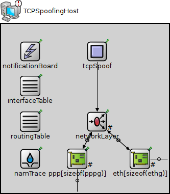
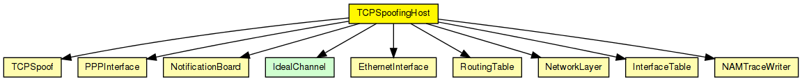
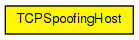

IP host with TCPSpoof in the application layer.
The following diagram shows usage relationships between types. Unresolved types are missing from the diagram.
The following diagram shows inheritance relationships for this type. Unresolved types are missing from the diagram.
| Name | Type | Default value | Description |
|---|---|---|---|
| numTcpApps | int | 0 | |
| numUdpApps | int | 0 | |
| tcpAppType | string | "" | |
| udpAppType | string | "" | |
| IPForward | bool | false | |
| namid | int | -1 | |
| routingFile | string | "" |
| Name | Value | Description |
|---|---|---|
| node | ||
| labels | node | |
| display | i=device/pc2;i2=status/excl |
| Name | Direction | Size | Description |
|---|---|---|---|
| pppg [ ] | inout | ||
| ethg [ ] | inout |
| Name | Type | Default value | Description |
|---|---|---|---|
| tcpSpoof.srcAddress | string | "" |
local address; may be left empty ("") |
| tcpSpoof.destAddress | string | "" |
destination address |
| tcpSpoof.srcPort | int |
local port number |
|
| tcpSpoof.destPort | int |
destination port number |
|
| tcpSpoof.seqNo | int |
sequence number (-1 for TCP ISS) |
|
| tcpSpoof.isSYN | bool | true |
whether to set SYN bit on packet |
| tcpSpoof.t | double |
simulation time to send at |
|
| networkLayer.ip.procDelay | double | 0s | |
| networkLayer.arp.retryTimeout | double | 1s |
number seconds ARP waits between retries to resolve an IP address |
| networkLayer.arp.retryCount | int | 3 |
number of times ARP will attempt to resolve an IP address |
| networkLayer.arp.cacheTimeout | double | 120s |
number seconds unused entries in the cache will time out |
| ppp.ppp.mtu | int | 4470 | |
| eth.mac.promiscuous | bool | false |
if true, all packets are received, otherwise only the ones with matching destination MAC address |
| eth.mac.address | string | "auto" |
MAC address as hex string (12 hex digits), or "auto". "auto" values will be replaced by a generated MAC address in init stage 0. |
| eth.mac.txrate | double | 100Mbps |
maximum data rate supported by this station (bit/s); actually chosen speed may be lower due to auto- configuration. 0 means fully auto-configured. |
| eth.mac.duplexEnabled | bool | true |
whether duplex mode can be enabled or not; whether MAC will actually use duplex mode depends on the result of the auto-configuration process (duplex is only possible with DTE-to-DTE connection). |
| eth.mac.mtu | int | 1500 |
// // \IP host with TCPSpoof in the application layer. // module TCPSpoofingHost { parameters: @node(); @labels(node); @display("i=device/pc2;i2=status/excl"); int numTcpApps = default(0); int numUdpApps = default(0); string tcpAppType = default(""); string udpAppType = default(""); bool IPForward = default(false); int namid = default(-1); string routingFile = default(""); gates: inout pppg[] @labels(PPPFrame-conn); inout ethg[] @labels(EtherFrame-conn); submodules: namTrace: NAMTraceWriter { parameters: namid = namid; @display("p=57,265"); } notificationBoard: NotificationBoard { parameters: @display("p=57,54"); } interfaceTable: InterfaceTable { parameters: @display("p=57,122"); } routingTable: RoutingTable { parameters: IPForward = IPForward; routerId = ""; routingFile = routingFile; @display("p=57,192"); } tcpSpoof: TCPSpoof { parameters: @display("p=188,54"); } networkLayer: NetworkLayer { parameters: proxyARP = false; @display("p=188,192;q=queue"); gates: ifIn[sizeof(pppg)+sizeof(ethg)]; ifOut[sizeof(pppg)+sizeof(ethg)]; } ppp[sizeof(pppg)]: PPPInterface { parameters: @display("p=149,265,row,90;q=txQueue"); } eth[sizeof(ethg)]: EthernetInterface { parameters: @display("p=272,265,row,90;q=txQueue"); } connections allowunconnected: tcpSpoof.ipv4Out --> networkLayer.tcpIn; // connections to network outside for i=0..sizeof(pppg)-1 { pppg[i] <--> ppp[i].phys; ppp[i].netwOut --> networkLayer.ifIn[i]; ppp[i].netwIn <-- networkLayer.ifOut[i]; } for i=0..sizeof(ethg)-1 { ethg[i] <--> eth[i].phys; eth[i].netwOut --> networkLayer.ifIn[sizeof(pppg)+i]; eth[i].netwIn <-- networkLayer.ifOut[sizeof(pppg)+i]; } }